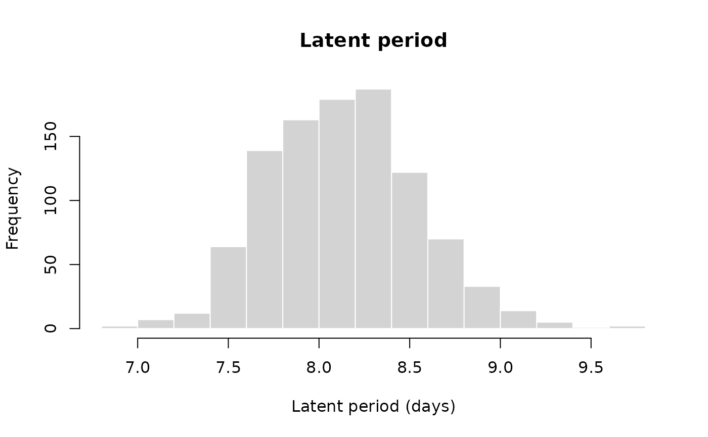
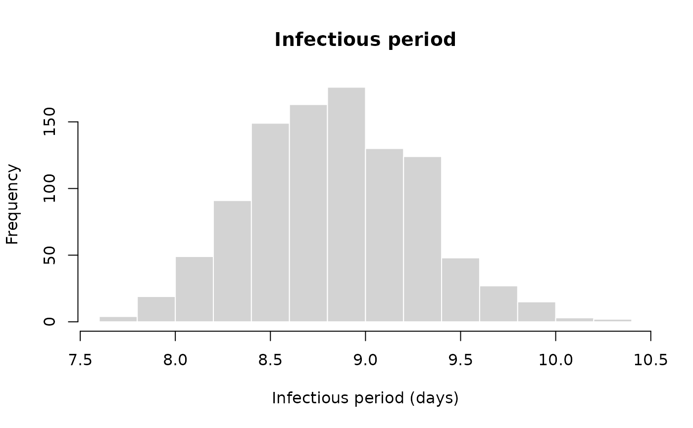

Draw simulation parameters for LSD
rlsd_param.RdThis function creates tables of input parameters for LSD transmission using estimates from Gubbins et al. (2019), based on virus isolation in cattle blood, assuming transmission via Stomoxys calcitrans. It uses sub-functions rlsd_latent, rlsd_infec_period, rlsd_R0 and rlsd_cfr. See these functions to change default values. Note that the value returned and associated variability refer to a population average, and do not reflect individual-level variation.
Source
Gubbins S. Using the basic reproduction number to assess the risk of transmission of lumpy skin disease virus by biting insects. Transbound Emerg Dis. 2019;66: 1873–1883.
Manić M, Stojiljković M, Petrović M, Nišavić J, Bacić D, Petrović T, et al. Epizootic features and control measures for lumpy skin disease in south-east Serbia in 2016. Transbound Emerg Dis. 2019;66: 2087–2099.
Abera Z, Degefu H, Gari G, Dibessa ZA. Review on epidemiology and economic importance of lumpy skin disease. Int J Basic Appl Virol. 2015. Available: https://www.academia.edu/download/76656747/2.pdf
Şevik M, Doğan M. Epidemiological and molecular studies on lumpy skin disease outbreaks in Turkey during 2014-2015. Transbound Emerg Dis. 2017;64: 1268–1279.
Value
A data.frame with one set of parameters per row, including: R0, the latent period, the infectious period, the transmission rate (beta), rate of incubation (sigma), and the clearance rate (gamma).
Author
Thibaut Jombart thibautjombart@gmail.com
Examples
x <- rlsd_param(1e3)
head(x)
#> R0_I R0_A latent infec_period cfr pasymp beta_I
#> 1 18.83061 2.049467 7.711800 8.295592 0.03419676 0.5414966 2.269954
#> 2 20.32712 2.169445 7.946568 8.762814 0.03824824 0.5108401 2.319703
#> 3 20.31482 1.774494 7.713310 8.783913 0.03873107 0.5098090 2.312730
#> 4 20.22332 1.912065 7.872701 9.704344 0.02912886 0.4855727 2.083945
#> 5 20.23645 1.658669 7.518210 8.739624 0.03465730 0.4944147 2.315483
#> 6 19.94376 1.873769 8.120189 8.417813 0.02993086 0.4759210 2.369233
#> beta_A sigma gamma
#> 1 0.2470549 0.1296714 0.1205459
#> 2 0.2475740 0.1258405 0.1141186
#> 3 0.2020163 0.1296460 0.1138445
#> 4 0.1970319 0.1270212 0.1030466
#> 5 0.1897872 0.1330104 0.1144214
#> 6 0.2225957 0.1231498 0.1187957
summary(x)
#> R0_I R0_A latent infec_period
#> Min. :18.83 Min. :1.446 Min. :6.918 Min. : 7.746
#> 1st Qu.:19.71 1st Qu.:1.875 1st Qu.:7.834 1st Qu.: 8.524
#> Median :19.99 Median :1.998 Median :8.126 Median : 8.824
#> Mean :20.00 Mean :2.008 Mean :8.135 Mean : 8.837
#> 3rd Qu.:20.27 3rd Qu.:2.140 3rd Qu.:8.396 3rd Qu.: 9.145
#> Max. :21.39 Max. :2.794 Max. :9.706 Max. :10.264
#> cfr pasymp beta_I beta_A
#> Min. :0.01130 Min. :0.4163 Min. :1.932 Min. :0.1639
#> 1st Qu.:0.02326 1st Qu.:0.4807 1st Qu.:2.184 1st Qu.:0.2098
#> Median :0.02905 Median :0.5002 Median :2.268 Median :0.2261
#> Mean :0.02955 Mean :0.4990 Mean :2.269 Mean :0.2278
#> 3rd Qu.:0.03511 3rd Qu.:0.5168 3rd Qu.:2.346 3rd Qu.:0.2450
#> Max. :0.06630 Max. :0.5746 Max. :2.676 Max. :0.3370
#> sigma gamma
#> Min. :0.1030 Min. :0.09743
#> 1st Qu.:0.1191 1st Qu.:0.10935
#> Median :0.1231 Median :0.11332
#> Mean :0.1232 Mean :0.11344
#> 3rd Qu.:0.1276 3rd Qu.:0.11732
#> Max. :0.1446 Max. :0.12910
hist(x$R0, main = "Distribution of R0", xlab = "R0", border = "white")
#> Error in hist.default(x$R0, main = "Distribution of R0", xlab = "R0", border = "white"): 'x' must be numeric
hist(x$latent, main = "Latent period",
xlab = "Latent period (days)",
border = "white")

hist(x$infec_period, main = "Infectious period",
xlab = "Infectious period (days)",
border = "white")
